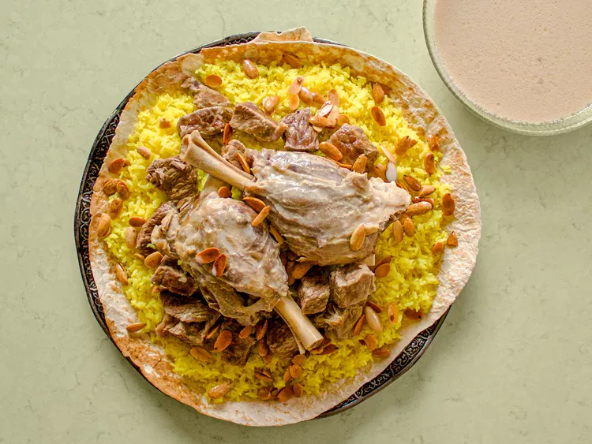

Home
Mansaf Recipe

Credit: Serious Eats / Mai Kakish
Description
Mansaf is the national dish of Jordan and a symbol of hospitality, tradition, and celebration. It features tender lamb
cooked in a rich sauce made with jameed (fermented dried yogurt), served over fragrant rice and topped with toasted nuts
and fresh herbs.
Known for its distinctive creamy flavor and comforting aroma, mansaf is often prepared for family gatherings, holidays,
and special occasions. This iconic Middle Eastern dish brings together simple ingredients to create a hearty and
memorable meal that reflects Jordan's rich culinary heritage.
Ingredients
- Lamb (bone-in pieces)
- Jameed (fermented dried yogurt)
- Long-grain rice
- Water or lamb broth
- Onion
- Bay leaves
- Cardamom pods
- Cinnamon stick
- Salt
- Black pepper
- Turmeric (optional)
- Ghee or butter
- Almonds (toasted)
- Pine nuts (toasted)
- Fresh parsley (for garnish)
- Shrak bread or pita bread (for serving)
Steps
- Soak the jameed in water for several hours or overnight, then blend until smooth.
- Place the lamb and onion in a large pot, cover with water, and bring to a boil.
- Skim off any foam, then add bay leaves, cardamom, cinnamon, salt, and pepper.
- Simmer the lamb for 1.5–2 hours, or until tender.
- Strain the broth and reserve it for cooking the rice.
- Heat the jameed sauce in a large pot and stir continuously until it begins to simmer.
- Add the cooked lamb to the jameed sauce and simmer for 15–20 minutes.
- Cook the rice in the reserved broth until fluffy and fully cooked.
- Arrange shrak bread or pita on a large serving platter.
- Spread the rice over the bread and place the lamb on top.
- Pour some of the jameed sauce over the lamb and rice.
- Garnish with toasted almonds, pine nuts, and fresh parsley before serving.